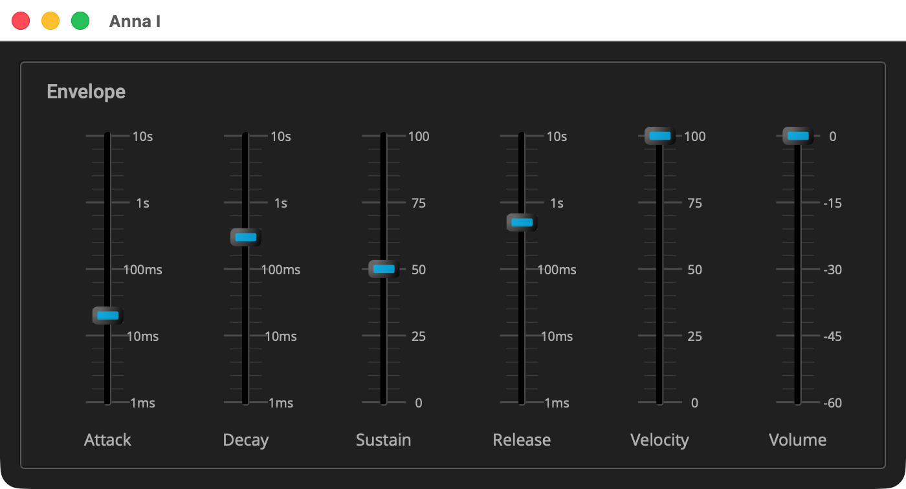

Anna I: The Voice
Overview
example/q_plug/anna_1 is the first of five stages of one polyphonic
synthesizer, each a complete plugin. Stage 1 is the voice: a bandwidth
limited sawtooth through an envelope, sixteen of them, played from a
keyboard, with pitch bend, vibrato from the modulation wheel and the
sustain pedal. Six sliders set the envelope, the velocity sensitivity and
the volume.

|
Read Your First Plugin: Gain first. The Anna tutorials build on it, and each builds on the one before, so read them in order. What an earlier page has explained is not explained again here; a callout points back to it instead. |
The synth is the one in Q’s Polyphonic Synth tutorial, made into
a plugin. The voice pool, the way a note gets a voice, and the voice
itself are the same code, less the voice’s filter, which comes back in
stage 2. That tutorial explains them. This page covers what the plugin
adds: parameters that change while notes sound, notes that come from a
host, and a panel. The files are laid out as Gain’s are, with anna in
place of gain. There is no resources/, because the panel draws
everything it shows.
|
The listings below are the parts of each file that matter. Each title
links to the whole file, and all of stage 1 is in
|
Quick Start
As in Your First Plugin: Gain, with anna_1 in place of gain. On macOS and
Linux:
Q=/path/to/q
cp -R "$Q/example/q_plug/anna_1" /tmp/anna_1
cd /tmp/anna_1
cmake -B build -G Ninja -DCMAKE_BUILD_TYPE=Debug -DQ_ROOT="$Q"
cmake --build buildOn Windows, in a command prompt with the MSVC environment loaded:
set Q=C:\path\to\q
xcopy /E /I "%Q%\example\q_plug\anna_1" "%TEMP%\anna_1"
cd /d "%TEMP%\anna_1"
cmake -B build -G Ninja -DCMAKE_BUILD_TYPE=Debug -DQ_ROOT="%Q%"
cmake --build buildThen start the standalone app:
-
macOS:
open "build/products/Anna I.app" -
Linux:
"build/products/Anna I" -
Windows:
"build\products\Standalone-q_plug-anna-1_standalone\Anna I.exe"
Where the app takes its audio and MIDI from, and how to change it, is in The Standalone App.
The app takes MIDI from every connected input, so play it from a keyboard.
The Controller
class anna_controller : public q_plug::controller
{
public:
using duration = q::duration; (1)
...
enum
{
attack_id, decay_id, sustain_level_id, release_id, velocity_id (2)
...
};
...
double sustain_level() const; // 0 to 1 (3)
...
double velocity() const; // 0 to 1 (4)
...
};| 1 | A time is a duration, Q’s unit for time, as Gain’s volume is a
q::decibel. |
| 2 | The indices, one per parameter, in the order parameters() lists
them. As in Gain, the plugin addresses a parameter by its index. |
| 3 | The sustain level, as a fraction from 0 to 1, as a Minimoog’s sustain is. In decibels, most of the travel would sit where a held note is all but gone. |
| 4 | How much of the key’s velocity reaches the loudness, also 0 to 1. |
inline q::duration anna_controller::attack() const
{
return get_parameter<duration>(attack_id); (1)
}
...
inline double anna_controller::sustain_level() const
{
return get_parameter<double>(sustain_level_id) / 100.0; (2)
}| 1 | A time parameter reads back as a q::duration, the way Gain’s volume
reads back as a q::decibel. |
| 2 | A plain number reads back as a double. The panel shows the sustain
in percent, so the accessor divides. |
parameter_list anna_controller::parameters() const
{
...
static parameter params[] =
{
parameter{1, "Attack", 20_ms} (1)
.range((1_ms).rep, (10_s).rep).log().unit("s") (2)
...
, parameter{3, "Sustain", 50.0}.range(0.0, 100.0).unit("%") (3)
, parameter{5, "Release", 500_ms} (4)
...
, parameter{13, "Velocity", 100.0}.range(0.0, 100.0).unit("%") (5)
, parameter{18, "Volume", 0_dB}.range(-60.0, 0.0) (6)
};
return { params };
}| 1 | An initial value of 20_ms makes a time parameter, the way 0_dB
made Gain’s volume a decibel parameter. |
| 2 | A range from 1 ms to 10 s, on a logarithmic taper, shown in seconds.
A duration’s .rep is its value in seconds, the plain number a range
takes. A range of four decades puts a label at each decade. |
| 3 | A plain number, with a range and a unit, here a percentage. |
| 4 | The ids skip 4. It belonged to a parameter this stage once had, and an id is never reused (see Your First Plugin: Gain). |
| 5 | Ids 6 to 12 are kept for the filter, which arrives in stage 2, so a preset saved here still reads there. |
| 6 | A decibel parameter, as in Gain, with its own range, -60 to 0 dB. |
|
In depth: Parameters, for the kinds, ranges, tapers and units. |
The Processor
struct anna_envelope_config (1)
{
q::duration attack_rate;
q::duration decay_rate;
q::decibel sustain_level;
q::duration release_rate;
};| 1 | The settings of each voice’s envelope. With no sustain rate in them, Q’s envelope holds its sustain level until the key comes up. |
class anna_processor
: public q_plug::midi_processor<anna_processor> (1)
{
public:
using midi_processor::operator(); (2)
...
struct voice (3)
{
...
float operator()(float pitch_factor); (4)
...
};| 1 | q_plug::midi_processor, from <q_plug/midi_processor.hpp>, is a
processor like Gain’s, with the same channels, activate, reset and
process, plus the MIDI described above. The class names itself as the
template argument (the curiously recurring template pattern), which is
how the base calls its handlers. |
| 2 | Without this, the handlers declared here would hide the base’s catch-all. |
| 3 | The voice of Polyphonic Synth, less its filter. That tutorial explains the voice, the pool and how a note takes a voice. |
| 4 | The plugin’s addition to the voice: a factor on the pitch the note was struck at, so bend and vibrato move every sounding note together. |
channel_config channels() const override { return {0, 2}; } (1)
...
void operator()(midi::note_on msg, std::size_t time); (2)
...
void operator()(midi::pitch_bend msg, std::size_t time);| 1 | An instrument: no audio in, stereo out. |
| 2 | The four messages the synth handles: note-on, note-off, control
change and pitch bend, in MIDI 2.0: midi is the header’s alias for
q::midi_2_0, and cc for midi::cc. time is the message’s frame
counted from the start of the host’s block, not of the call. |
static constexpr float bend_range = 2.0f; // semitones (1)
static constexpr float vibrato_depth = 0.5f; // semitones
...
struct settings (2)
{
...
};| 1 | Pitch bend reaches two semitones each way, and the wheel’s vibrato,
from the sine generator _lfo, half a semitone. |
| 2 | The envelope settings last pushed into the voices, so only a setting that has changed is pushed again. |
void voice::on(q::frequency freq, float velocity)
{
...
_env.attack(); (1)
}
...
float voice::operator()(float pitch_factor)
{
auto env = _env() * _velocity;
_phase.set(q::frequency{as_float(_freq) * pitch_factor}, _sps); (2)
return q::saw(_phase++) * env; (3)
}| 1 | Retriggers a voice, a stolen one included, without a click. |
| 2 | _phase is Q’s phase_iterator, which steps through one cycle of
the waveform per period. It is set to the pitch the note was struck at,
times the factor bend and vibrato make, and env is the envelope’s
output, scaled by the velocity. |
| 3 | Q’s bandwidth limited sawtooth, saw_osc, through the envelope, an envelope_gen. The header includes both, and the sin_cos_gen the vibrato uses. |
anna_envelope_config anna_processor::envelope_config() const
{
...
, q::lin_to_db(_ctl.sustain_level()) (1)
...
}| 1 | Q’s envelope takes its sustain level in decibels, so the panel’s fraction is converted here. |
void anna_processor::activate()
{
auto const cfg = envelope_config();
_voices.clear();
_voices.reserve(num_voices);
for (std::size_t i = 0; i != num_voices; ++i)
_voices.emplace_back(cfg, float(sps())); (1)| 1 | The pool is built in activate, where the sample rate is known. Q’s
example builds it when the synth is made. |
void anna_processor::reset()
{
...
for (auto& v : _voices)
{
v._env = q::adsr_envelope_gen{cfg, float(sps())}; (1)
...
}| 1 | reset silences every voice by rebuilding its envelope, so no note
rings across a transport jump. |
void anna_processor::update_envelopes()
{
...
for (auto& v : _voices)
{
...
v._env.attack_rate(q::duration{now.attack}, rate); (1)
...
_pushed = now;
}| 1 | Q’s example sets its envelopes once. A plugin’s settings change while
notes sound, so now, the settings read from the controller in this
call, is compared with what was pushed last, and a segment’s setter is
called only when its setting has changed. The settings are kept as plain
seconds, hence q::duration{now.attack}. A rate changed while its
segment runs carries on from where it is. |
void anna_processor::process(in_channels const& /*in*/
, out_channels const& out)
{
update_envelopes(); (1)
...
for (auto frame : out.frames)
{
...
auto const pitch_factor = std::exp2((_bend + vibrato) / 12.0f); (2)
...
left[frame] = right[frame] = mix * headroom * _volume(volume); (3)
...
}| 1 | The envelopes are brought up to date once per call. As in Gain, that is enough: each call is a run of frames between the host’s events. |
| 2 | Twelve semitones is a doubling, so bend and vibrato, in semitones, become one ratio. |
| 3 | out.frames is the call’s range of frames, and left and right
are the two output channels, out[0] and out[1], indexed by frame. The
sum of the voices goes to both channels, scaled by the smoothed volume
and by headroom, 0.3, which leaves room for sixteen voices at once. Q’s
example
soft-clips after this, since it plays straight to an audio device. A
plugin has its volume control and the host’s meter instead, so nothing
shapes the sound on the way out. |
void anna_processor::operator()(midi::note_on msg, std::size_t)
{
...
note_on(msg.key(), float(msg.velocity()) / 65535); (1)
}
...
void anna_processor::operator()(midi::control_change msg, std::size_t)
{
...
if (msg.controller() == cc::sustain)
sustain(msg.value() >= 0x80000000u); (2)
else if (msg.controller() == cc::modulation)
_wheel = float(msg.value()) / 4294967295.0f; (3)
}
...
void anna_processor::operator()(midi::pitch_bend msg, std::size_t)
{
...
_bend = (float(msg.value()) - float(midi::pitch_bend::center)) (4)
/ float(midi::pitch_bend::center) * bend_range;
}
...
void anna_processor::note_on(std::uint8_t key, float velocity)
{
allocate(key).on(midi::note_frequency(key), sensed(velocity)); (5)
}
...
float anna_processor::sensed(float velocity) const
{
...
return (1.0f - s) + s * velocity; (6)
}| 1 | A MIDI 2.0 velocity is 16 bits, hence 65535 for full. |
| 2 | A MIDI 2.0 controller value is 32 bits. The sustain pedal counts as down from the middle of the range up. |
| 3 | The modulation wheel, 0 to 1, sets the vibrato’s depth. |
| 4 | Pitch bend, 32 bits centered on midi::pitch_bend::center, scaled to
the bend range. |
| 5 | midi::note_frequency is the key’s pitch. |
| 6 | Velocity sensitivity mixes the key’s velocity with full: at 0 every note is the same. |
void anna_processor::note_off(std::uint8_t key)
{
...
if (_sustain)
v._held = true; (1)
else
v.off();
...
}| 1 | With the pedal down, a key coming up marks its voice held rather than releasing it. Lifting the pedal releases what it held. |
voice& anna_processor::allocate(std::uint8_t key) (1)
{
auto free = std::ranges::find_if(
_voices, [](voice const& v) { return !v.active(); });
voice& v = (free != _voices.end())?
*free
: *std::ranges::min_element(_voices, {}, &voice::_order);
v._key = key;
v._order = ++_order;
v._held = false; // struck again: the pedal is no longer holding it
return v;
}| 1 | A free voice, or the oldest sounding one, as in Polyphonic Synth. |
The Presenter
anna_presenter.hpp has the shape of Gain’s presenter header.
template <typename... Labels>
auto make_slider(Labels&&... labels) (1)
{
...
return share(
...
basic_rect_thumb<24, 14>() (2)
...
slider_marks_lin<28, 4, 5>(basic_track<6, true>()) (3)
...
template <typename Subject>
auto captioned(Subject&& subject, char const* text)
{
...
caption( (4)
...
}| 1 | One function makes every slider, shared, as bind takes it (see
Your First Plugin: Gain). |
| 2 | A rectangular thumb that Elements draws, so this plugin ships no images. |
| 3 | A linear track with four major divisions and five minor steps in each, so the major ticks fall at zero, a quarter, a half, three quarters and full. |
| 4 | Elements' caption, the parameter’s name under its slider. |
Your First Plugin: Gain bound its fader through a db_scale, a mapping between
the control’s travel and the parameter’s value. A parameter is itself
such a mapping, over its own range and taper, so here each slider is
bound with its parameter’s declaration.
void anna_presenter::on_attach(elements::view& view_)
{
...
auto const& params = _ctl.parameters(); (1)
auto attack = make_slider("1ms", "10ms", "100ms", "1s", "10s"); (2)
...
auto link = [&](int id, auto control)
{
bind(id, control, params[id]); (3)
...
link(ctl::attack_id, attack);
...
link(ctl::volume_id, volume);| 1 | The parameter list, whose declarations bind takes below. ctl,
used below, is the function’s alias for anna_controller. |
| 2 | Each slider’s labels, one per major tick, bottom to top. On a log taper spanning four decades, that is a label per decade. |
| 3 | Gain’s bind took a db_scale; this one takes the parameter’s own
declaration, which maps the control’s travel, 0 to 1, to the parameter’s
range and taper, log or linear. |
view_.content(
fixed_size({700, 346}, (1)
...
margin({6, 6, 6, 6}, group("Envelope", (2)
...
htile( (3)
...
box(bkd_color)
...
}| 1 | A fixed layout, the size plugin_info gives. Without a fixed size,
the panel would have no maximum, and a host would let the user resize
its window freely. |
| 2 | A framed group per section of the signal path. Stage 1 has one. |
| 3 | The six sliders side by side, each captioned. |
|
In depth: Presenter, for |
The Plugin
anna.cpp is Gain’s gain.cpp with the names changed, and a
different identity:
plugin_info const& info()
{
...
"instrument", (1)
...
static plugin_info const i = (2)
{
...
return i;| 1 | instrument puts the plugin in a host’s instrument menu, and a host
that reads the features does not offer it as an insert. synthesizer and
stereo describe it further. |
| 2 | The view size is the panel’s fixed_size. The state version is 2,
since stage 1 once kept its sustain in decibels and now keeps it in
percent, which changed what a saved value means. |
The Build
CMakeLists.txt is Gain’s with the names changed, and two differences in
kind. AUV2_INSTRUMENT_TYPE is aumu, a music device, where Gain’s was
aufx, an effect. q_plug_add_resources names no files, since the panel
draws everything it shows; the fonts go in all the same.
Running
Inside Q’s build, as QPlug Setup and Installation describes, the synth is built with everything else. The validation tests of all five stages run with:
ctest --test-dir cmake-build-debug -R annaThe products are named Anna I, laid out as Gain’s are, and
install the same way. Insert the synth on an instrument track, open its
editor, and play: the bend and modulation wheels and the sustain pedal
work from the first note.
Components Used
| Component | Role |
|---|---|
The processor base that takes MIDI |
|
Times on a log taper, percentages, a volume |
|
The voice’s oscillator |
|
The voice’s envelope |
|
The vibrato |
|
|
Previous: Your First Plugin: Gain | Next: Anna II: The Filter